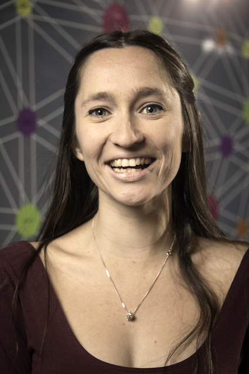
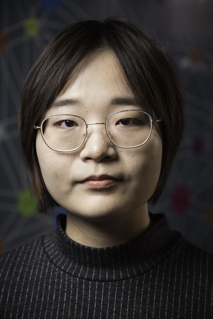

We develop integrated neuroimaging and network analysis approaches to study drug-resistant
epilepsy and autism, two prevalent, detrimental, and heterogenous conditions affecting
young people. Based on statistical learning techniques, we develop novel and effective
procedures for disease subtyping, diagnostics, and prognostics.
 Ongoing work to subtype indviduals with neurodevelopmental conditions, such as
autism spectrum disorder, with multiple MRI parameters.
Ongoing work to subtype indviduals with neurodevelopmental conditions, such as
autism spectrum disorder, with multiple MRI parameters.
Using MRI-based longitudinal designs, we track progressive neocortical, mesiotemporal,
as well as network-level alterations in brain disorders.
Together with the Max Planck Institute in Leipzig, Germany, we participate in a large-scale neuroimaging
study that investigates the effects of socio-cognitive and affective training on
behavioural markers, welbeing, and brain networks.
 Longitudinal MRI findings in the neocortex
and mesiotemporal lobe in
patients with temporal lobe epilepsy, as well as our recent
meta-analysis in the condition.
Longitudinal MRI findings in the neocortex
and mesiotemporal lobe in
patients with temporal lobe epilepsy, as well as our recent
meta-analysis in the condition.
We combine multimodal neuroimaging with behavioural testing to study substrates of
cognitive and affective phenotypes in healthy and diseased populations.
A particular emphasis is put on self-generated thought, memory, and social emotions.
Through imaging studies in children, we assess whether the structural and functional maturation
of specific anatomical areas underlies cognitive and socio-affective development.
 Previous work to assess the modulation of structural covariance networks by
individual differences in cognitive and affective perspective taking.
Previous work to assess the modulation of structural covariance networks by
individual differences in cognitive and affective perspective taking.
Our publications on google scholar

Our open software on Github

Slides for our presentations and talks

Connect with our collaborators:
Andrea and Neda Bernasconi, Neuroimaging of Epilepsy Lab Jonny Smallwood, York Neuroimaging Center, UK Beth Jefferies, York Neuroimaging Center, UK Daniel Margulies, Institut de Cerveau et de la Moelle épinière, Paris, France Sofie Valk, Forschungszentrum Julich, Germany Richard Bethlehem, Cambridge University, Uk Adriana Di Martino, Child Mind Institute, NYC Michael Milham, Child Mind Institute, NYC Tania Singer, Max-Planck Institute for Human Cognitive and Brain Science, Germany Dewi Schrader, University of British Columbia Children's HospitalConnect with our institute:

We are always looking for talented and enthusiastic trainees to join our lab! If you are interested in joining, please email us your CV and a cover letter
TEAM
|
Boris Bernhardt, PhD Assistant Professor of Neurology and Neurosurgery Killam Scholar Neuroimaging | Connectomics | Epilepsy | Autism | Cognition email |
|||
|  |
Casey Paquola, PhD Postdoctoral Researcher Complex networks | Multi-modal integration | Adolescent development email |
||
|
Oualid Benkarim, PhD Postdoctoral Researcher Brain Development | Autism | Machine Learning email |
|||
|
Reinder Vos de Wael, Msc PhD student Hippocampus | Neuroinformatics | Functional topography email |
|||
|
Sara Lariviere, Msc PhD student Brain Development | Epilepsy | Multimodal MRI email |
|||
|
Shahin Tavakol, Msc PhD student Mesiotemporal Lobe | Memory | Functional Imaging email |
|||
|
Alex Lowe, Msc PhD student Mesiotemporal Lobe | Epilepsy | Aging | Neuorodegeneration email |
|||
|
Jessica Royer, D Clin Psy PhD student Social Cognition | Emotions | Epilepsy | Multimodal email |
|||
|  |
Yifei Wang, MD PhD student (with U Nanjing) Epilepsy | Multimodal | Connectome email |
||
|
Shelly Yin, BHons Honors student Brain Development | Autism | Connectivity email |
ALUMNI

|
Seok-Jun Hong, PhD Postdoctoral Researcher, now at Child Mind Institute Brain Development | Connectome | Autism | Machine Learning email |
||

|
Brian Hyung, BHons Honors student, now at UoFT Brain Development | Microsture | Diffusion email |
||

|
Tabea Haas-Heger, BHons Honors Student now: MD student KC London email |
VISITORS, UNDERGRADUATES, AND SATELLITES

Sofie Valk, PhD Collaborator now Postdoc FZ Julich email |

Amadeus Kanaan, PhD Visiting Postdoc Max-Planck Institute Leipzig email |

Zhengge-Wang, MD PhD Visiting Professor now back at Nanjing University email |

Raul Cruces, MSc Visiting PhD student now at UNAM, Mexico email |
OUR RESEARCH IS KINDLY SUPPORTED BY

|

|

|
|

|

|
Multimodal Imaging and Connectome Analysis Lab Montreal Neurological Institute and Hospital 3801 University Street, Montreal, QC, H3A 2B4, Canada boris.bernhardt@mcgill.ca Phone: 514 398 3579